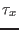
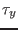
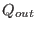

Next: Annual North Sea simulation Up: Shelf sea scenarios Previous: Shelf sea scenarios Contents
A data set which has been used throughout the last 20 years
as a calibration for mixing parameterisations
has been collected during the
measurements of the Fladenground
Experiment 1976 (FLEX'76) campaign. These measurements
of meteorological forcing and potential temperature profiles
were carried out in spring 1976 in the northern North Sea at a water
depth of about 145 m and a geographical position
at 58 55'N and 0
55'N and 0 32'E.
The simulation is run from April 6 to June 7, 1976.
The Kondo (1975) bulk formulae have been used for calculating the
surface fluxes.
For further details concerning the measurements,
see Soetje and Huber (1980) and Brockmann et al. (1984).
This FLEX'76 data set has been used by several authors in order to
test different mixing schemes (see e.g. Friedrich (1983),
Frey (1991), Burchard and Baumert (1995), Pohlmann (1997),
Burchard and Petersen (1999), Mellor (2001)).
32'E.
The simulation is run from April 6 to June 7, 1976.
The Kondo (1975) bulk formulae have been used for calculating the
surface fluxes.
For further details concerning the measurements,
see Soetje and Huber (1980) and Brockmann et al. (1984).
This FLEX'76 data set has been used by several authors in order to
test different mixing schemes (see e.g. Friedrich (1983),
Frey (1991), Burchard and Baumert (1995), Pohlmann (1997),
Burchard and Petersen (1999), Mellor (2001)).
Data files:
| momentumflux.dat | surface stress components,  and
 in Nm |
| heatflux.dat | solar radiation and outgoing heat flux, and
 in Wm |
| sst.dat | observed SST in |
| pressure.dat | time series of surface slopes fitted to the local spring-neap cycle |
| tprof.dat | profiles of measured potential temperature for initial conditions and |
| validation, data are reanalysed and low pass filtered | |
| sprof.dat | profiles of idealised salinity for initial conditions and relaxation |
| tprof_ctd | CTD-profiles of potential temperature, with some gaps |
| sprof_ctd | CTD-profiles of salinity, with some gaps |
| extinction.dat | extinction coefficients fitted to measurements |
Karsten Bolding 2012-01-24